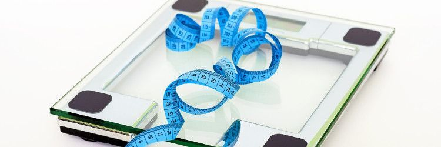
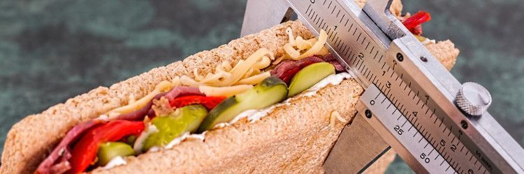
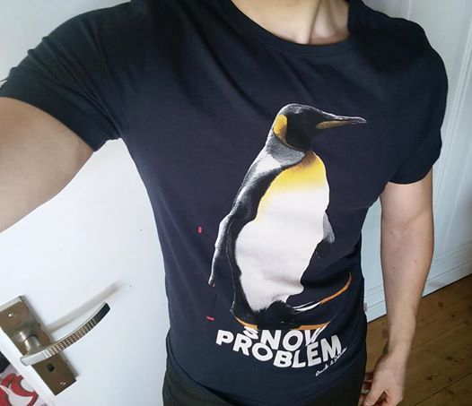

Perte de 70kg : Comment j’ai hack mon corps
Aujourd’hui un article un peu spécial où je vais parler d’un sujet un peu plus personnel. Mon expérience pouvant profiter aux autres, j’ai décidé de partager cette histoire qui m’est chère.
Tout commence en 2012, j’ai 21 ans, une paire de régimes à mon actif et pèse près de 140kg pour une taille de 172cm. Vous savez comment ça s’appelle ? De l’obésité morbide. Un terme lourd de sens vous annonçant que votre surpoids est assez important pour être une cause, indirecte, de décès prématuré.
Suite à des raisons X ou Y j’étais donc à nouveau décidé à perdre du poids mais pas comme les autres fois. Cette fois ci j’allais faire les choses à ma façon, avec pour leitmotiv : If you understand it, you can hack it.
En tant que nerd si il y a une chose dont je suis convaincu c’est du potentiel de l’expression suivante :
Si tu donnes un poisson à un homme, il mangera un jour. Si tu lui apprends à pêcher, il mangera toute sa vie.
C’était ça la solution, comprendre comment le corps marche pour le hack.
Si vous regardez un peu, la quasi-totalité des régimes vous dictent votre façon de manger mais ne vous apprennent pas à manger, ni même à comprendre comment le corps humain gère le processus de prise et de perte de poids, en tout cas pas assez pour que cela ne vous serve vraiment.
Mise au point
Lorsque quelqu’un apprend ma petite histoire, j’ai toujours le droit à :
C’est un nouveau régime ? Mais, comment t’as fait ? C’est quoi ton secret ? T’as fait ça avec des cachets ? T’as fais quelle opération ?
Avec des cachets oui, 50mg de ReflechisUnPeu et 50mg de CBeau2Rever 3 fois par jour…
J’en profite au passage pour mettre les choses au clair, je n’ai pas « acheté » de régime et je ne me suis pas non plus fait opéré, donc pas de bypass, sleeve, anneau gastrique ou je ne sais quoi ici ni de promotion envers une méthode miracle X ou Y.
2eme point à éclaircir, je n’ai pas non plus suivi de nutritionniste, j’ai par contre fais plusieurs check-ups chez mon généraliste pour faire un point sur mon état de santé pendant et après mes expériences, bilan ?
Je n’ai absolument aucun problème et j’ai guéri mon cholestérol.
Revenons à nos moutons. J’ai donc passé nuits et jours pendant plusieurs semaines, tout en commençant un régime classique, à me documenter sur la nutrition ainsi que le fonctionnement de la prise et de la perte de poids.
Je voulais comprendre comment ça marche. J’ai appris énormément de chose grâce à cela, cette période m’a permis d’apprendre toutes les bases nécessaires pour la suite.
La balance et les fluctuations de poids

Commençons par une notion de base, inconnue de la plupart des personnes commençant un régime et qui est une des causes principales d’abandon :
Lorsque vous commencez un régime, vous perdez du poids la première semaine puis moins les semaines suivantes. Cela est vrai, c’est vous qui avez faux dans votre réflexion.
La première semaine vous allez perdre du poids alors que le but du régime est de perdre de la graisse.
Lorsque vous baissez votre consommation de nourriture, vous avez alors moins d’aliments dans votre estomac, mais votre corps, dans un premier temps, évacue à la même vitesse qu’auparavant. Je ne pense pas avoir besoin de vous faire un dessin…
Ajoutez à cela que chaque gramme de glucide mangé peut retenir jusqu’à 4gr d’eau avec lui, nécessaire à sa digestion. Vous mangez moins + vous mangez moins de glucide = vous retenez moins d’eau et d’aliments.
Pendant que j’y suis, votre poids peut aussi varier d’un jour à l’autre, toujours à cause de cette rétention d’eau et d’aliment, pesez vous le matin, buvez un demi litre d’eau et pesez vous après…
Grâce à ces notions, j’étais déjà prêt à faire face à la déprime du régime, au fameux « je mange moins mais je ne perd pas ».
Mais ça ne nous explique pas comment manger ?
Les maths, le secret de la perte & de la prise poids

Calories consommées – calories dépensées = grossir ou maigrir.
On ne peut pas faire plus simple, tous les jours vous dépensez des calories et en consommez, peut importe la façon, marcher, courir, parler, respirer…
De même avec les aliments, non il n’y a pas d’aliments qui « font grossir » ni même « maigrir » juste des aliments avec des densités caloriques différentes.
Notez qu’un gramme de sucre ou de protéine est égal à 4kcals alors d’un gramme de gras lui en vaut le double.
Au passage, j’ai entendu pas mal de fois que l’ananas fait maigrir… WTF ?
Un aliment qui fait maigrir est un aliment qui apporterait, par exemple, 10 calories mais qui entraînerait une dépense de 15 calories pour être digéré vous faisant donc brûler 5 calories, mais il en existe très peu, ajoutez à ça le fait que nous mangeons rarement un aliment seul, ces calculs ne sont pas fiables.
Notez que durant ma perte de poids, j’ai aussi commencé la musculation, seul chez moi avec du matériel acheté en grande surface. Ce n’est pas le Gold’s Gym mais si on peut brûler un peu plus de calories et perdre moins de muscle, on ne va pas dire non.
L’homéostasie, mon meilleur ennemi
Durant cette quête, j’ai pu rencontré l’homéostasie et j’ai aussi pu constater que mon corps lui était un de ces proches !
Pour faire simple, lors d’un changement le corps essaye de s’adapter.
C’est à cause de ça que :
- Votre corps se met à suer lorsque sa température interne monte et risque d’endommager vos organes.
- Le rythme cardiaque et le rythme ventilatoire varient, afin de réguler la diffusion dans votre corps du dioxygène, des ions, des nutriments, etc…
C’est aussi grâce à cela que le poids se régule, la nourriture étant une source d’énergie, lorsque le corps voit que vous lui en apportez moins, il va les puiser, vous perdez alors du poids.
Mais ! En contrepartie il diminuera aussi votre énergie et donc votre dépense calorique afin de ne pas dépenser toutes ses réserves trop rapidement.
Au final, si vous baissez trop légèrement votre apport alors votre poids stagnera toujours et si vous baissez votre apport trop agressivement vous n’aurez plus aucune énergie. Il faut donc trouver un équilibre.
BodyHack.sh
C’est à ce moment que j’ai commencé à voir mon corps comme un système informatique, la base du hacking c’est de comprendre comment fonctionne un mécanisme afin de pouvoir le bidouiller pour le détourner de son fonctionnement originel.
Au lieu de subir la réaction du corps face à notre alimentation, modifions cette dernière afin de reprendre le contrôle.
Nous savons donc qu’il faut dépenser plus que ce que l’on mange, tout en continuant de s’alimenter assez pour rester un minimum en forme, on commence donc par calculer sa dépense énergétique moyenne journalière.
J’ai donc calculé combien de calories mon corps avait besoin par jour pour maintenir mon poids, je vous épargne la formule, il y a des très bon calculateurs en ligne pour ça.
Avec ces données je n’avais alors plus qu’a faire des tests, peser et compter la nourriture puis suivre l’évolution de mon corps. Dès lors, j’ai commencé à manger 500kcals en dessous de ma maintenance.
Pourquoi 500 ? Car il est presque impossible de calculer précisément sa dépense calorique journalière :
- Si demain je n’avais pas le temps d’aller au sport ?
- Si je sortais en retard du travail et devais courir pour attraper mon bus ?
Ajoutez à ça l’homéostasie permettant au corps de vous ralentir légèrement pour ne pas perdre, 500 est un bon chiffre.
Ainsi j’étais assez alimenté pour continuer a vivre normalement (même s’il faut supporter la faim) tout en perdant progressivement du poids.
J’ai gardé le cap, je mangeais ce que je voulais, dès lors que je gardais l’équilibre consommé/dépensé. Aucun aliment n’était interdit.
Je me fixais juste un minimum de protéine à manger pour conserver la masse musculaire. Deuxième objectif nutritionnel, les lipides afin de conserver un bon équilibre hormonal.
Et pour terminer, un minimum de fruits et légumes pour garder un bon apport en vitamines et minéraux ainsi qu’un bon niveau de satiété. Une fois ces objectif atteints je mangeais alors ce dont j’avais envie.
Pour vous donner une idée, voilà à quoi ressemblais une journée classique :
- Petit dejeuner : 500g fromage blanc, 250kcals, 40g de protéine15g de chocolat noir, 100kcals, 6g de lipide2 galettes de mais : 50kcals
- Collation de 10h : 1 banane : 100kcals
- Dejeuner : 200g jambon : 288kcals, 40g de protéine, 14g de lipide1 salade : 50kcals2 galettes de mais : 50kcals
- Collation de 16h : 15g d’amandes, 100kcals, 8g de lipide
- Diner : 200g thon, 234kcals, 51g de protéine, 3,2 g de lipide3 oeufs : 270kcals, 16g de protéine, 21g de lipide15g de chocolat noir, 100kcals, 6g de lipide
- Total : ~1600kcals, ~150g de protéine, ~60g de lipide
Évidemment, compte-tenu que dans le calcul des calories brûlées, le poids du corps rentre en jeu, il faut de temps en temps recalculer sa dépense énergétique. Chose parfaitement logique, imaginez qu’un surpoids de 10 kilos équivaut à se promener en permanence avec un pack d’eau en plus sur soi…
9 mois plus tard j’avais perdu 60kg. J’ai alors décidé de faire une pause, me concentrer plus sur la musculation et de remanger à maintenance, voir légèrement au dessus (pratique très courante dans ce sport appelé bulking par les anglais).
J’ai donc continuer comme ça jusqu’à remonter à 94kg.

J’avais alors une masse musculaire qui me plaisait, j’ai donc redémarré une période de déficit calorique, afin de perdre le surplus de gras pris au passage.
Actuellement je pèse entre 74 et 78kg selon la quantité d’eau que je transporte. (Et les excès, merci les fêtes !)

Je finirai en reparlant de l’équilibre des calories, vous pouvez imaginer ça sur plusieurs jours. A partir du moment où la balance globale penche en votre faveur vous avez bon !
Imaginez ce procédé par exemple :
- -500 kcals pendant 3 jours
- maintenance une journée
- recommencez une série de jours en déficit
Ainsi vous avez tout de même des journées de relâchement tout en restant en déficit. Le but ici étant de garder un esprit saint, vous pourriez faire de même en semaines, ou mois.
Le principal, c’est de garder l’équilibre